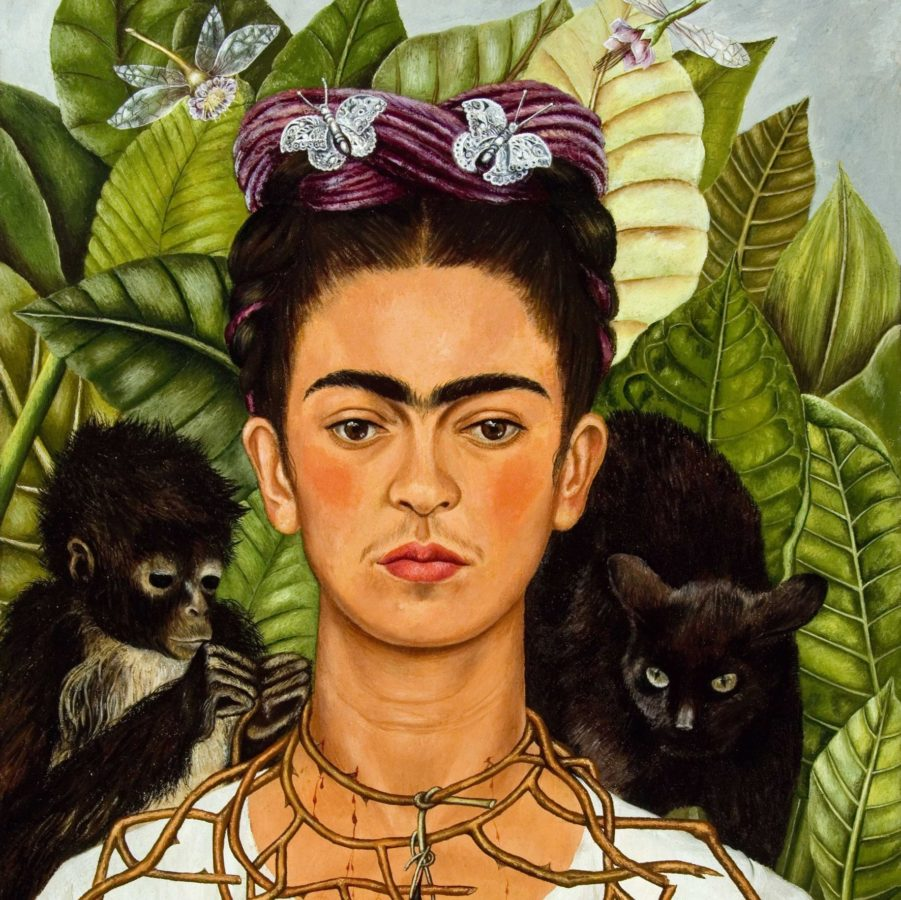
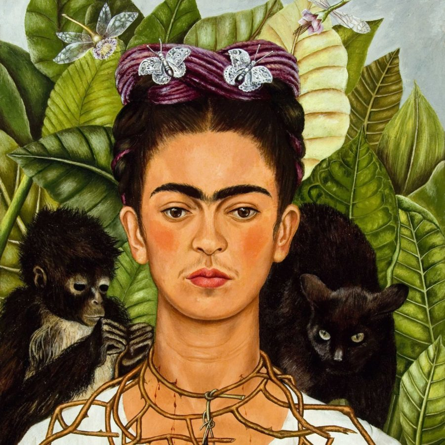

profile
Frida Kahlo's work placed Mexican art on the international stage.
Her style was figuratist and self-taught, with elements of the
fantastical and an emphasis on her own individual, biographical
perspective. Her self-referential art, now a media phenomenon,
originated in the development of her portrait painting which,
from early on, became her most effective device for expressing a
certain unease about exploring her own personality.
Frida Kahlo was born on July 6, 1907 in the Mexico City home owned by her parents since 1904, known today as the Blue House.
At the age of six Frida fell ill with polio, causing her right leg
to remain shorter than the other, which resulted in bullying.
However, this setback did not prevent her from being a curious and
tenacious student. She completed her high school studies at the Escuela Nacional Preparatoria.
At the age of 18, on September 17, 1925, Frida was in a tragic accident.
A streetcar crashed into the bus she was traveling in.
The consequences to her person were grave: several bones were fractured and
her spinal cord, damaged. While she was immobilized for several months,
Frida began to paint. Afterwards, she formed relationships with several artists,
including the photographer Tina Modotti and the already renowned artist Diego Rivera.
Frida claimed that, unlike the surrealist painters,
she did not paint her dreams but rather, her reality.
Outstanding in her work are the self-portraits influenced
by the photographic portraiture style she learned from her father, Guillermo Kahlo.
All information courtesy of Google Arts and Culture, Museo of Frida Kahlo, and WikiArt
 
